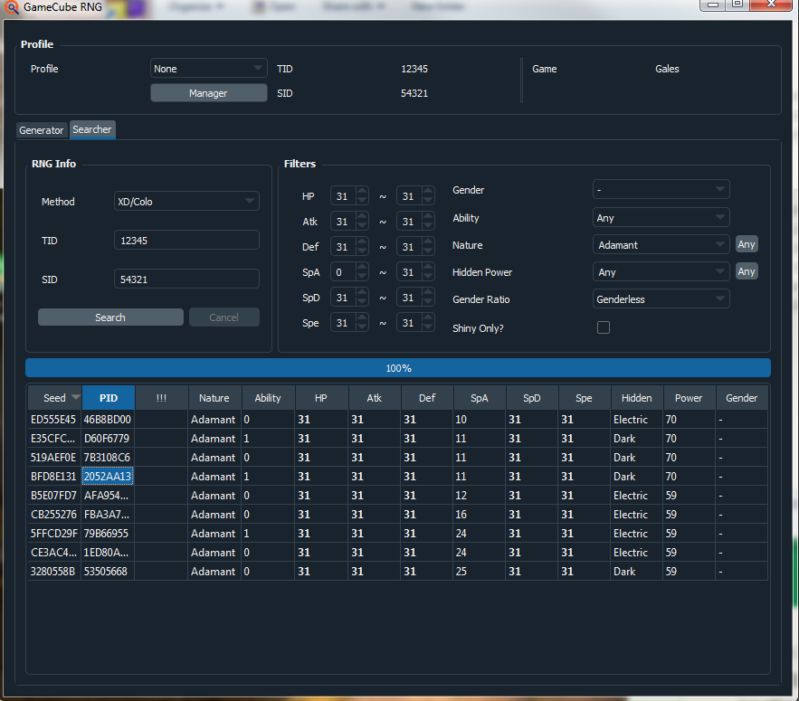

Ageto Celebi RNG
- Prerequisits
- Finding Initial Seed
- Doing the RNG
- Notes and Conclusions
Guide Navigation
Video Guide
Please push. this is temp text
Text Guide
This guide will cover the way you can rng the Celebi on the Japanese Bonus Disc for Pokemon Colosseum. I will also briefly explain how the rng for the Pikachu works, but will not cover it in-depth at is is very similar to the celebi.
Prerequisits
- Japanese Pokemon Colosseum with all 48 Purified Shadow Pokemon
- Japanese Pokemon Colosseum Bonus Disc.
- GBA to GC Link cable. At least 2 Japanese GBA Pokemon Games in the Hall of Fame(Reccomend RS, since FRLG has to completely finish the Sevii Islands story to do which takes a while).
- XD Pokemon and XD Check
- 5000 Pokecoupons in at least 2 Japanese GBA Games. This is done by grinding Mt.Battle for coupons with a team from the GBA registered while the GBA is plugged in.
- A stat calculator of your choice, I reccomend Metalkids IV Calculator.
- 20 or 30 rare candies. It's easy to get rare candies using the RS Japanese item glitch:
- Or emerald clone glitch
- Or Zigzagoon pickup farming in RS
- You will also need this tool: Celebi Frame Calculator
- Password: Cerebigetdaze
- It is in Japanese but here is a translation:
The numbers next to what you can do to frame advance are how many times you are willing to do that type of advancement. The final celebi/pikachu received IS NOT part of your advancements.
Frame advancement methods.
Each picture here will show how to do a type of frame advancement with descriptive text beneath it.
Accept Celebi: 29283 frames(Can be done up to 47 times.) Select the top option はい at this prompt.
Accept Pikachu on GC and Remove memcard: 7 frames.(Can be done infinitely). Select the option the hand is pointing at in the picture and immediately remove the GC Memcard for Pikachu.
Reject Celebi: 42488 frames(Can be done infinitely). Select the bottom option いいえ at the prompt shown.
Accept Pikachu on GC Fully: 27 frames(Can be done infinitely
Try to accept Celebi with 6 Pokemon in your party: 32048 frames(Can be done infinitely). For this, have 6 Pokemon in your party and try to accept Celebi as norma. Celebi will come down, Logan will say some things, and Celebi will fly away. This is the final text box before Celebi leaves.
Turn off GBA while receiving Celebi:42535 frames(Can be done infinitely) Select the top option,はい, at this prompt and immediately turn off your GBA Console.
Inconsistent Advances: Celebi in this specific spot will hover indefinitely before you hit the A button. 2792 frames are consumed around every 90-110 visual frames. This can be used to do some extra advances if you have no mathematically possible way to add up consistent advances to hit the frame you want. This is the text box before the yes or no prompt. Let Celebi sit here for a while.
Turn off GBA when accepting Pikachu: Turn the GBA off at this screen after the GBA is successfully connect.
Finding Initial Seed
The first thing you must do is receive the mandatory celebi to your Pokemon Colosseum save file. For our purposes this Celebi is not useful.
The next thing you must do is receive a Pikachu in GB game number 1. Determine the Pikachus exact IV values. Put this information into XD Check, along with its nature. Select the seed from the second column from the left. You must also select the circled option. This is your new current seed.

The option to pick is the second column from the left. Th one I used is highlighted in blue. The natures are in Japanese, so I reccomend using this listing to help you translate them:
Finding a Target
Paste your current seed into XDPOKEMON and specify the IV ranges and the Nature of the Celebi or Pikachu that you wish to RNG. If you are trying to RNG Celebi, in the box pictured below, put 29278. This is how many frames advance before Celebi is generated.(An additional 5 frames advance afterwards, this is why receiving a Celebi advances 29283). If you are trying to RNG a Pikachu, put a 2 here instead.(Pikachu also advaces an additional 5 frames after it is generated, this is why it advances 7 when turing the GBA off.)
Thank you for reading, I hope you succeed in getting your custom trainer ID in Pokemon Colosseum. If you have any questions feel free to ask me on Twitter @im_a_blisy or join my discord. https://discord.gg/QchhXQv